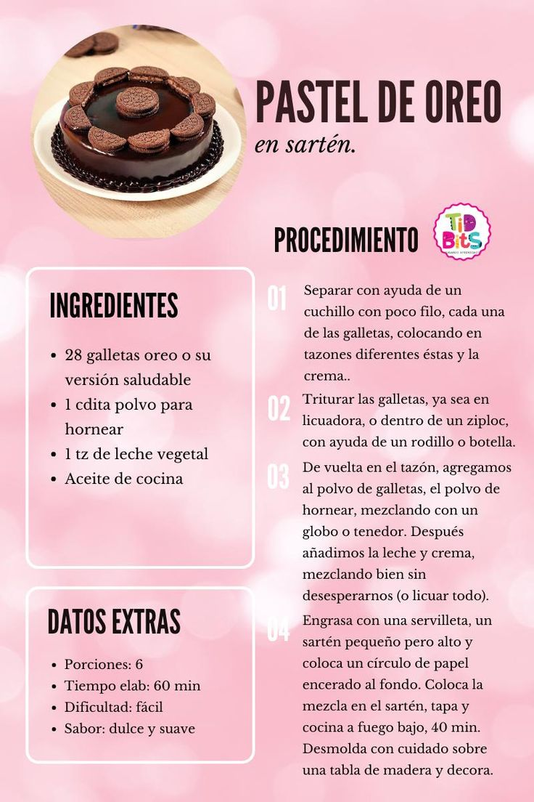

Postres
Descubrí nuestras recetas dulces más deliciosas y fáciles de preparar.
Batido de Chocolate

Un batido cremoso y refrescante con el sabor intenso del chocolate, ideal para acompañar cualquier comida o disfrutar en una tarde calurosa.